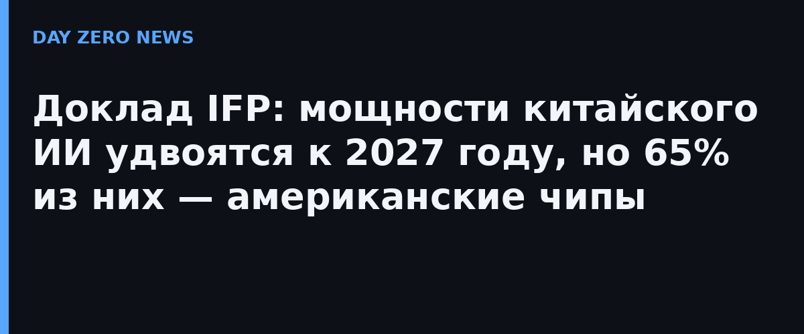

Institute for Progress (IFP) опубликовал исследование «Как увеличить преимущество США в ИИ над Китаем». По оценке авторов, суммарные ИИ-мощности в распоряжении китайских компаний удвоятся к концу 2027 года: с примерно 4,6 млн до 8,8 млн «H100-эквивалентов» — условной единицы, отсчитываемой от производительности ускорителей Nvidia H100. При этом около 65% этого парка к концу 2027 года составит техника на американских чипах: легальный импорт, контрабанда и аренда мощностей через зарубежные облака.
Отдельный акцент — удалённый доступ к американским ускорителям через облачные сети за пределами Китая: по прогнозу IFP он вырастет с примерно 1 млн H100-эквивалентов в этом году до 2,8 млн к концу 2027-го. Именно эту канала авторы называют самой уязвимой точкой: её, по их выводам, можно почти полностью перекрыть новыми экспортными правилами бюро BIS без пересмотра сухого списка поставок. IFP также рекомендует ужесточить должную осмотрительность (due diligence) по всей цепочке поставок чипов.
Несмотря на примерно 16-кратное преимущество США по обучающим мощностям, передовые китайские модели отстают от американских всего на 6,5 месяца — именно столько, по оценке доклада, «съедает» дистилляция: обучение своих моделей на ответах более сильных американских ИИ. Без дистилляции, по модели IFP, разрыв составлял бы около 13 месяцев. Китай обвинения в «агрессивной дистилляции» отвергает.
Доклад вышел на фоне громких дел о контрабанде чипов: на этой неделе в Калифорнии арестовали подозреваемого в схеме поставки американских AI-ускорителей в Китай примерно на 300 миллионов долларов, а китайский Cambricon только что отчитался о трёхкратном росте прибыли на замещении американских чипов. В России сопоставимой открытой методики подсчёта национальных ИИ-мощностей в эквивалентах H100 публично не публиковали — китайские и американские оценки остаются основными ориентирами по отрасли.